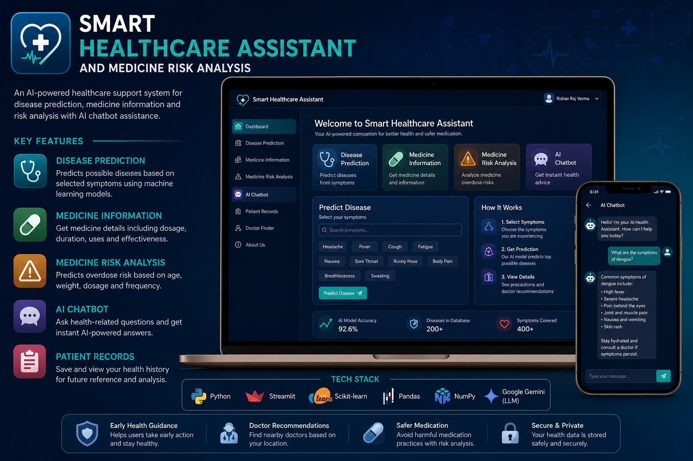
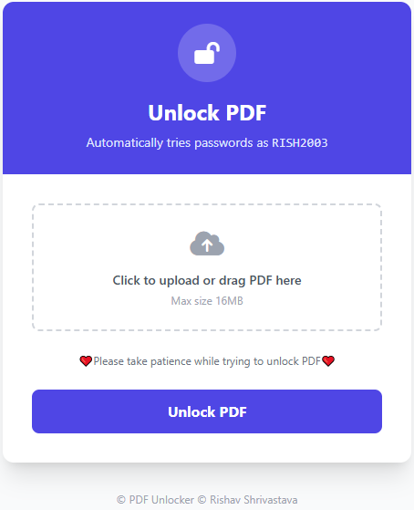
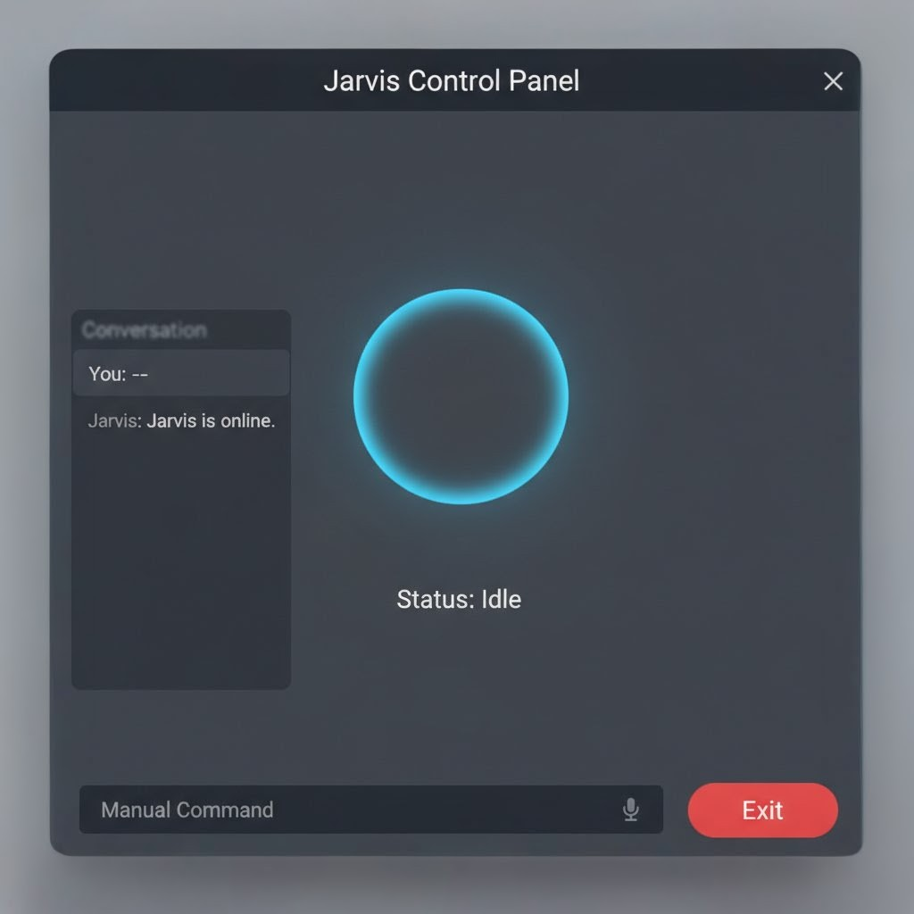
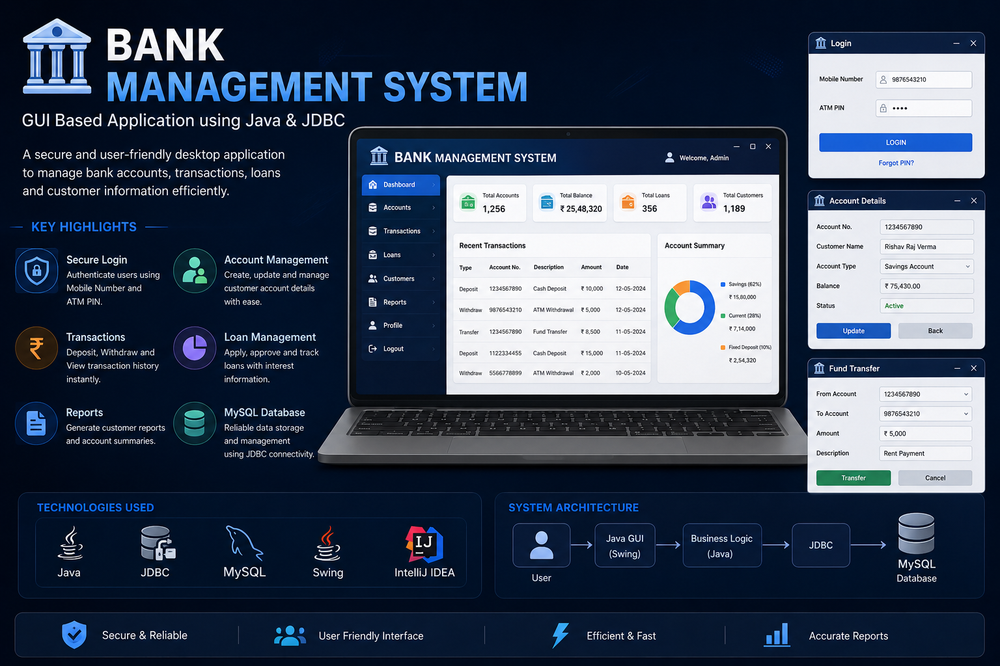
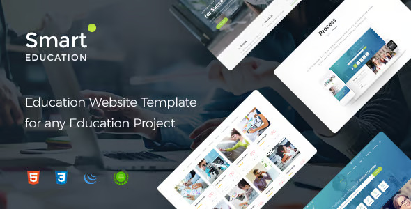
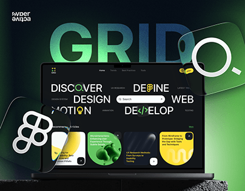

Hello, It's Me
Rishav Raj Verma
And I'm a
Building beautiful and functional Software with a focus on user experience and clean code.
Download CVAbout Me
MCA Postgraduate
I recently completed my MCA from Guru Ghasidas Vishwavidyalaya, Bilaspur, Chhattisgarh, securing an 8.56 CGPA out of 10. During my studies, I learned subjects like Artificial Intelligence, Machine Learning, Neural Networks, Data Mining, Data Warehousing, and Data Science. I also worked on several projects and models that helped me improve my technical skills and problem-solving ability.
Read MoreMy Skills
Core tools and technologies used across projects and coursework.
Programming
C, C++, Java, Python, JavaScript
AI & ML
Artificial Intelligence, Machine Learning, Deep Learning, CNN
Frameworks
Flask, Streamlit
Web
HTML5, CSS
Data
SQL, MySQL, Pandas, NumPy, Matplotlib
Tools
Git, GitHub, Microsoft 365
What I Do
Backend Integration
Working with **Flask, Python, and APIs** to ensure seamless data flow and performance.
Learn MoreLatest Project





